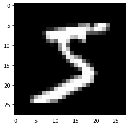
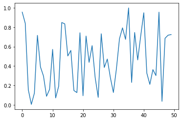
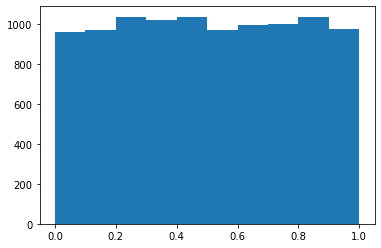

from pathlib import PathMatrix Multiplication
from urllib.request import urlretrieveurlretrieve?Signature: urlretrieve(url, filename=None, reporthook=None, data=None)
Docstring:
Retrieve a URL into a temporary location on disk.
Requires a URL argument. If a filename is passed, it is used as
the temporary file location. The reporthook argument should be
a callable that accepts a block number, a read size, and the
total file size of the URL target. The data argument should be
valid URL encoded data.
If a filename is passed and the URL points to a local resource,
the result is a copy from local file to new file.
Returns a tuple containing the path to the newly created
data file as well as the resulting HTTPMessage object.
File: /opt/anaconda3/lib/python3.9/urllib/request.py
Type: functionimport pickle, gzip, math, os, time, shutil, matplotlib as mpl, matplotlib.pyplot as pltMNIST_URL='https://github.com/mnielsen/neural-networks-and-deep-learning/blob/master/data/mnist.pkl.gz?raw=true'path_data = Path('data')
print(path_data)
path_data.mkdir(exist_ok=True)
path_gz = path_data/'mnist.pkl.gz'datafrom urllib.request import urlretrieve
if not path_gz.exists():
urlretrieve(MNIST_URL, path_gz)!ls -l datatotal 33312
-rw-r--r-- 1 htkumar staff 17051982 Oct 12 00:34 mnist.pkl.gzwith gzip.open(path_gz, 'rb') as f:
((x_train, y_train), (x_valid, y_valid), _) = pickle.load(f, encoding='latin-1')type(x_train), x_train.shape(numpy.ndarray, (50000, 784))lst1 = list(x_train[0])
vals = lst1[200: 210]
vals[0.0,
0.0,
0.0,
0.19140625,
0.9296875,
0.98828125,
0.98828125,
0.98828125,
0.98828125,
0.98828125]vals[0.0,
0.0,
0.0,
0.19140625,
0.9296875,
0.98828125,
0.98828125,
0.98828125,
0.98828125,
0.98828125]def chunks(x, sz):
for i in range(0, len(x), sz):
yield x[i:i+sz]list(chunks(vals, 5))[[0.0, 0.0, 0.0, 0.19140625, 0.9296875],
[0.98828125, 0.98828125, 0.98828125, 0.98828125, 0.98828125]]len(lst1)784mpl.rcParams['image.cmap'] = 'gray'
plt.imshow(list(chunks(lst1, 28)));
from itertools import isliceit = iter(vals)
islice(it, 5)<itertools.islice at 0x7fd540d54720>list(islice(it, 5))[0.0, 0.0, 0.0, 0.19140625, 0.9296875]it = iter(lst1)
img = list(iter(lambda: list(islice(it, 28)), []))plt.imshow(img);
iter??Docstring:
iter(iterable) -> iterator
iter(callable, sentinel) -> iterator
Get an iterator from an object. In the first form, the argument must
supply its own iterator, or be a sequence.
In the second form, the callable is called until it returns the sentinel.
Type: builtin_function_or_methodlen(img[0]), len(img)(28, 28)img[20][15]0.98828125class Matrix:
def __init__(self, xs):
self.xs = xs
def __getitem__(self, i):
return self.xs[i[0]][i[1]]m = Matrix(img)
m[20, 15]0.98828125import torch: import torch
from torch import tensortensor(vals)tensor([0.0000, 0.0000, 0.0000, 0.1914, 0.9297, 0.9883, 0.9883, 0.9883, 0.9883,
0.9883])x_train, y_train, x_valid, y_valid = map(tensor, (x_train, y_train, x_valid, y_valid))
x_train.shapetorch.Size([50000, 784])x_train.type()'torch.FloatTensor'imgs = x_train.reshape((-1, 28, 28))
imgs.shapetorch.Size([50000, 28, 28])plt.imshow(imgs[0]);
imgs[0,20,15]tensor(0.9883)n,c = x_train.shape
n, c(50000, 784)y_train, y_train.shape(tensor([5, 0, 4, ..., 8, 4, 8]), torch.Size([50000]))min(y_train), max(y_train)(tensor(0), tensor(9))y_train.min(), y_train.max()(tensor(0), tensor(9))rnd_state = None
def seed(a):
global rnd_state
a, x = divmod(a, 30268)
a, y = divmod(a, 30306)
a, z = divmod(a, 30322)
rnd_state = int(x)+1, int(y)+1, int(z)+1seed(457428938475)
rnd_state(4976, 20238, 499)def rand():
global rnd_state
x, y, z = rnd_state
x = (171 * x) % 30269
y = (172 * y) % 30307
z = (170 * z) % 30323
rnd_state = x,y,z
return (x/30269 + y/30307 + z/30323) % 1.0rand(), rand(), rand()(0.7645251082582081, 0.7920889799553945, 0.06912886811267205)plt.plot([rand() for _ in range(50)]);
plt.plot??Signature: plt.plot(*args, scalex=True, scaley=True, data=None, **kwargs)
Docstring:
Plot y versus x as lines and/or markers.
Call signatures::
plot([x], y, [fmt], *, data=None, **kwargs)
plot([x], y, [fmt], [x2], y2, [fmt2], ..., **kwargs)
The coordinates of the points or line nodes are given by *x*, *y*.
The optional parameter *fmt* is a convenient way for defining basic
formatting like color, marker and linestyle. It's a shortcut string
notation described in the *Notes* section below.
>>> plot(x, y) # plot x and y using default line style and color
>>> plot(x, y, 'bo') # plot x and y using blue circle markers
>>> plot(y) # plot y using x as index array 0..N-1
>>> plot(y, 'r+') # ditto, but with red plusses
You can use `.Line2D` properties as keyword arguments for more
control on the appearance. Line properties and *fmt* can be mixed.
The following two calls yield identical results:
>>> plot(x, y, 'go--', linewidth=2, markersize=12)
>>> plot(x, y, color='green', marker='o', linestyle='dashed',
... linewidth=2, markersize=12)
When conflicting with *fmt*, keyword arguments take precedence.
**Plotting labelled data**
There's a convenient way for plotting objects with labelled data (i.e.
data that can be accessed by index ``obj['y']``). Instead of giving
the data in *x* and *y*, you can provide the object in the *data*
parameter and just give the labels for *x* and *y*::
>>> plot('xlabel', 'ylabel', data=obj)
All indexable objects are supported. This could e.g. be a `dict`, a
`pandas.DataFrame` or a structured numpy array.
**Plotting multiple sets of data**
There are various ways to plot multiple sets of data.
- The most straight forward way is just to call `plot` multiple times.
Example:
>>> plot(x1, y1, 'bo')
>>> plot(x2, y2, 'go')
- If *x* and/or *y* are 2D arrays a separate data set will be drawn
for every column. If both *x* and *y* are 2D, they must have the
same shape. If only one of them is 2D with shape (N, m) the other
must have length N and will be used for every data set m.
Example:
>>> x = [1, 2, 3]
>>> y = np.array([[1, 2], [3, 4], [5, 6]])
>>> plot(x, y)
is equivalent to:
>>> for col in range(y.shape[1]):
... plot(x, y[:, col])
- The third way is to specify multiple sets of *[x]*, *y*, *[fmt]*
groups::
>>> plot(x1, y1, 'g^', x2, y2, 'g-')
In this case, any additional keyword argument applies to all
datasets. Also this syntax cannot be combined with the *data*
parameter.
By default, each line is assigned a different style specified by a
'style cycle'. The *fmt* and line property parameters are only
necessary if you want explicit deviations from these defaults.
Alternatively, you can also change the style cycle using
:rc:`axes.prop_cycle`.
Parameters
----------
x, y : array-like or scalar
The horizontal / vertical coordinates of the data points.
*x* values are optional and default to ``range(len(y))``.
Commonly, these parameters are 1D arrays.
They can also be scalars, or two-dimensional (in that case, the
columns represent separate data sets).
These arguments cannot be passed as keywords.
fmt : str, optional
A format string, e.g. 'ro' for red circles. See the *Notes*
section for a full description of the format strings.
Format strings are just an abbreviation for quickly setting
basic line properties. All of these and more can also be
controlled by keyword arguments.
This argument cannot be passed as keyword.
data : indexable object, optional
An object with labelled data. If given, provide the label names to
plot in *x* and *y*.
.. note::
Technically there's a slight ambiguity in calls where the
second label is a valid *fmt*. ``plot('n', 'o', data=obj)``
could be ``plt(x, y)`` or ``plt(y, fmt)``. In such cases,
the former interpretation is chosen, but a warning is issued.
You may suppress the warning by adding an empty format string
``plot('n', 'o', '', data=obj)``.
Returns
-------
list of `.Line2D`
A list of lines representing the plotted data.
Other Parameters
----------------
scalex, scaley : bool, default: True
These parameters determine if the view limits are adapted to the
data limits. The values are passed on to `autoscale_view`.
**kwargs : `.Line2D` properties, optional
*kwargs* are used to specify properties like a line label (for
auto legends), linewidth, antialiasing, marker face color.
Example::
>>> plot([1, 2, 3], [1, 2, 3], 'go-', label='line 1', linewidth=2)
>>> plot([1, 2, 3], [1, 4, 9], 'rs', label='line 2')
If you specify multiple lines with one plot call, the kwargs apply
to all those lines. In case the label object is iterable, each
element is used as labels for each set of data.
Here is a list of available `.Line2D` properties:
Properties:
agg_filter: a filter function, which takes a (m, n, 3) float array and a dpi value, and returns a (m, n, 3) array
alpha: scalar or None
animated: bool
antialiased or aa: bool
clip_box: `.Bbox`
clip_on: bool
clip_path: Patch or (Path, Transform) or None
color or c: color
dash_capstyle: `.CapStyle` or {'butt', 'projecting', 'round'}
dash_joinstyle: `.JoinStyle` or {'miter', 'round', 'bevel'}
dashes: sequence of floats (on/off ink in points) or (None, None)
data: (2, N) array or two 1D arrays
drawstyle or ds: {'default', 'steps', 'steps-pre', 'steps-mid', 'steps-post'}, default: 'default'
figure: `.Figure`
fillstyle: {'full', 'left', 'right', 'bottom', 'top', 'none'}
gid: str
in_layout: bool
label: object
linestyle or ls: {'-', '--', '-.', ':', '', (offset, on-off-seq), ...}
linewidth or lw: float
marker: marker style string, `~.path.Path` or `~.markers.MarkerStyle`
markeredgecolor or mec: color
markeredgewidth or mew: float
markerfacecolor or mfc: color
markerfacecoloralt or mfcalt: color
markersize or ms: float
markevery: None or int or (int, int) or slice or list[int] or float or (float, float) or list[bool]
path_effects: `.AbstractPathEffect`
picker: float or callable[[Artist, Event], tuple[bool, dict]]
pickradius: float
rasterized: bool
sketch_params: (scale: float, length: float, randomness: float)
snap: bool or None
solid_capstyle: `.CapStyle` or {'butt', 'projecting', 'round'}
solid_joinstyle: `.JoinStyle` or {'miter', 'round', 'bevel'}
transform: unknown
url: str
visible: bool
xdata: 1D array
ydata: 1D array
zorder: float
See Also
--------
scatter : XY scatter plot with markers of varying size and/or color (
sometimes also called bubble chart).
Notes
-----
**Format Strings**
A format string consists of a part for color, marker and line::
fmt = '[marker][line][color]'
Each of them is optional. If not provided, the value from the style
cycle is used. Exception: If ``line`` is given, but no ``marker``,
the data will be a line without markers.
Other combinations such as ``[color][marker][line]`` are also
supported, but note that their parsing may be ambiguous.
**Markers**
============= ===============================
character description
============= ===============================
``'.'`` point marker
``','`` pixel marker
``'o'`` circle marker
``'v'`` triangle_down marker
``'^'`` triangle_up marker
``'<'`` triangle_left marker
``'>'`` triangle_right marker
``'1'`` tri_down marker
``'2'`` tri_up marker
``'3'`` tri_left marker
``'4'`` tri_right marker
``'8'`` octagon marker
``'s'`` square marker
``'p'`` pentagon marker
``'P'`` plus (filled) marker
``'*'`` star marker
``'h'`` hexagon1 marker
``'H'`` hexagon2 marker
``'+'`` plus marker
``'x'`` x marker
``'X'`` x (filled) marker
``'D'`` diamond marker
``'d'`` thin_diamond marker
``'|'`` vline marker
``'_'`` hline marker
============= ===============================
**Line Styles**
============= ===============================
character description
============= ===============================
``'-'`` solid line style
``'--'`` dashed line style
``'-.'`` dash-dot line style
``':'`` dotted line style
============= ===============================
Example format strings::
'b' # blue markers with default shape
'or' # red circles
'-g' # green solid line
'--' # dashed line with default color
'^k:' # black triangle_up markers connected by a dotted line
**Colors**
The supported color abbreviations are the single letter codes
============= ===============================
character color
============= ===============================
``'b'`` blue
``'g'`` green
``'r'`` red
``'c'`` cyan
``'m'`` magenta
``'y'`` yellow
``'k'`` black
``'w'`` white
============= ===============================
and the ``'CN'`` colors that index into the default property cycle.
If the color is the only part of the format string, you can
additionally use any `matplotlib.colors` spec, e.g. full names
(``'green'``) or hex strings (``'#008000'``).
Source:
@_copy_docstring_and_deprecators(Axes.plot)
def plot(*args, scalex=True, scaley=True, data=None, **kwargs):
return gca().plot(
*args, scalex=scalex, scaley=scaley,
**({"data": data} if data is not None else {}), **kwargs)
File: /opt/anaconda3/lib/python3.9/site-packages/matplotlib/pyplot.py
Type: functionplt.hist([rand() for _ in range(10_000)])(array([ 959., 972., 1036., 1019., 1037., 971., 997., 1000., 1036.,
973.]),
array([6.60514437e-06, 1.00005135e-01, 2.00003666e-01, 3.00002196e-01,
4.00000726e-01, 4.99999256e-01, 5.99997787e-01, 6.99996317e-01,
7.99994847e-01, 8.99993378e-01, 9.99991908e-01]),
<BarContainer object of 10 artists>)
The slowest run took 4.24 times longer than the fastest. This could mean that an intermediate result is being cached.
127 µs ± 95.4 µs per loop (mean ± std. dev. of 7 runs, 10 loops each)torch.manual_seed(1)
weights = torch.randn(784, 10)
bias = torch.zeros(10)m1 = x_valid[:5]
m2 = weightsm1.shape, m2.shape(torch.Size([5, 784]), torch.Size([784, 10]))ar,ac = m1.shape
br,bc = m2.shape
(ar,ac), (br, bc)((5, 784), (784, 10))t1 = torch.zeros(ar, bc)
t1.shapetorch.Size([5, 10])for i in range(ar):
for j in range(bc):
for k in range(ac):
t1[i,j] += m1[i,k] * m2[k,j]t1tensor([[-10.9417, -0.6844, -7.0038, -4.0066, -2.0857, -3.3588, 3.9127,
-3.4375, -11.4696, -2.1153],
[ 14.5430, 5.9977, 2.8914, -4.0777, 6.5914, -14.7383, -9.2787,
2.1577, -15.2772, -2.6758],
[ 2.2204, -3.2171, -4.7988, -6.0453, 14.1661, -8.9824, -4.7922,
-5.4446, -20.6758, 13.5657],
[ -6.7097, 8.8998, -7.4611, -7.8966, 2.6994, -4.7260, -11.0278,
-12.9776, -6.4443, 3.6376],
[ -2.4444, -6.4034, -2.3984, -9.0371, 11.1772, -5.7724, -8.9214,
-3.7862, -8.9827, 5.2797]])torch.set_printoptions(precision=2, linewidth=140, sci_mode=False)t1tensor([[-10.94, -0.68, -7.00, -4.01, -2.09, -3.36, 3.91, -3.44, -11.47, -2.12],
[ 14.54, 6.00, 2.89, -4.08, 6.59, -14.74, -9.28, 2.16, -15.28, -2.68],
[ 2.22, -3.22, -4.80, -6.05, 14.17, -8.98, -4.79, -5.44, -20.68, 13.57],
[ -6.71, 8.90, -7.46, -7.90, 2.70, -4.73, -11.03, -12.98, -6.44, 3.64],
[ -2.44, -6.40, -2.40, -9.04, 11.18, -5.77, -8.92, -3.79, -8.98, 5.28]])def matmul(a, b):
ar,ac = a.shape
br,bc = b.shape
c = torch.zeros(ar, bc)
for i in range(ar):
for j in range(bc):
for k in range(ac):
c[i,j] += m1[i,k] * m2[k,j]
return cCPU times: user 580 ms, sys: 4.72 ms, total: 585 ms
Wall time: 588 msNumba
from numba import njit@njit
def dot(a, b):
res = 0.
for i in range(len(a)): res += a[i]*b[i]
return resfrom numpy import arrayCPU times: user 215 ms, sys: 34.2 ms, total: 250 ms
Wall time: 338 ms20.0CPU times: user 25 µs, sys: 0 ns, total: 25 µs
Wall time: 26.7 µs20.0def matmul(a, b):
(ar,ac),(br,bc) = a.shape,b.shape
assert ac==br
c = torch.zeros(ar, bc)
for i in range(ar):
for j in range(bc): c[i,j] = dot(a[i,:], b[:,j])
return cm1a,m2a = m1.numpy(),m2.numpy()from fastcore.test import *test_close(t1, matmul(m1a,m2a))351 µs ± 22.2 µs per loop (mean ± std. dev. of 7 runs, 50 loops each)CPU times: user 1.55 ms, sys: 1.12 ms, total: 2.67 ms
Wall time: 2.01 msElementwise ops
a = tensor([10., 6, -4])
b = tensor([2., 8, 7])
a,b(tensor([10., 6., -4.]), tensor([2., 8., 7.]))a+btensor([12., 14., 3.])(a<b).float().mean()tensor(0.67)m = tensor([[1., 2, 3], [4,5,6], [7,8,9]]); mtensor([[1., 2., 3.],
[4., 5., 6.],
[7., 8., 9.]])sf = (m*m).sum()
sftensor(285.)sf.sqrt()tensor(16.88)m[2,:], m[:,2](tensor([7., 8., 9.]), tensor([3., 6., 9.]))def matmul(a, b):
(ar,ac),(br,bc) = a.shape,b.shape
c = torch.zeros(ar, bc)
for i in range(ar):
for j in range(bc):
c[i,j] = (a[i] * b[:,j]).sum()
return ctest_close(t1, matmul(m1, m2))test_close??Signature: test_close(a, b, eps=1e-05)
Source:
def test_close(a,b,eps=1e-5):
"`test` that `a` is within `eps` of `b`"
test(a,b,partial(is_close,eps=eps),'close')
File: /opt/anaconda3/lib/python3.9/site-packages/fastcore/test.py
Type: function747 µs ± 58.1 µs per loop (mean ± std. dev. of 7 runs, 50 loops each)def matmul(a, b):
(ar,ac),(br,bc) = a.shape,b.shape
c = torch.zeros(ar, bc)
for i in range(ar):
for j in range(bc):
c[i,j] = torch.dot(a[i], b[:,j])
return ctest_close(t1, matmul(m1, m2))590 µs ± 12 µs per loop (mean ± std. dev. of 7 runs, 50 loops each)mtensor([[1., 2., 3.],
[4., 5., 6.],
[7., 8., 9.]])m.shapetorch.Size([3, 3])c = tensor([10, 20, 30]);c.shapetorch.Size([3])t = c.expand_as(m)t.storage() 10
20
30
[torch.storage._TypedStorage(dtype=torch.int64, device=cpu) of size 3]t.stride(), t.shape((0, 1), torch.Size([3, 3]))c.unsqueeze(0).shapetorch.Size([1, 3])c.unsqueeze(1).shapetorch.Size([3, 1])c[None, :].shapetorch.Size([1, 3])c[None].shapetorch.Size([1, 3])c[:,None].shapetorch.Size([3, 1])c[...,None].shapetorch.Size([3, 1])ttensor([[10, 20, 30],
[10, 20, 30],
[10, 20, 30]])ctensor([10, 20, 30])c[None,:] * c[:,None]tensor([[100, 200, 300],
[200, 400, 600],
[300, 600, 900]])digit = m1[0]
digit.shape, m2.shape(torch.Size([784]), torch.Size([784, 10]))m1.shapetorch.Size([5, 784])digit[:,None].shapetorch.Size([784, 1])m2.shapetorch.Size([784, 10])digit.unsqueeze(1).shapetorch.Size([784, 1])def matmul(a, b):
(ar,ac),(br,bc) = a.shape,b.shape
c = torch.zeros(ar, bc)
for i in range(ar):
c[i] = (a[i,:,None] * b).sum(dim=0) # (ac, 1) * (br, bc)
return cm1[0, :].unsqueeze(-1).shapetorch.Size([784, 1])test_close(t1, matmul(m1, m2))132 µs ± 7.76 µs per loop (mean ± std. dev. of 7 runs, 50 loops each)tr = matmul(x_train, weights)
tr.shapetorch.Size([50000, 10])CPU times: user 2.04 s, sys: 330 ms, total: 2.37 s
Wall time: 1.2 s1.2 s ± 7.79 ms per loop (mean ± std. dev. of 7 runs, 10 loops each)11.8 ms ± 1.69 ms per loop (mean ± std. dev. of 7 runs, 5 loops each)CUDA
from numba import cuda# x_train.cuda()m1tensor([[0., 0., 0., ..., 0., 0., 0.],
[0., 0., 0., ..., 0., 0., 0.],
[0., 0., 0., ..., 0., 0., 0.],
[0., 0., 0., ..., 0., 0., 0.],
[0., 0., 0., ..., 0., 0., 0.]])m1.shape, m2.shape(torch.Size([5, 784]), torch.Size([784, 10]))mr = torch.einsum('ik,kj->ikj', m1, m2)
mr.shapetorch.Size([5, 784, 10])mr.sum(1)tensor([[-10.94, -0.68, -7.00, -4.01, -2.09, -3.36, 3.91, -3.44, -11.47, -2.12],
[ 14.54, 6.00, 2.89, -4.08, 6.59, -14.74, -9.28, 2.16, -15.28, -2.68],
[ 2.22, -3.22, -4.80, -6.05, 14.17, -8.98, -4.79, -5.44, -20.68, 13.57],
[ -6.71, 8.90, -7.46, -7.90, 2.70, -4.73, -11.03, -12.98, -6.44, 3.64],
[ -2.44, -6.40, -2.40, -9.04, 11.18, -5.77, -8.92, -3.79, -8.98, 5.28]])torch.einsum('ik,kj->ij', m1, m2)tensor([[-10.94, -0.68, -7.00, -4.01, -2.09, -3.36, 3.91, -3.44, -11.47, -2.12],
[ 14.54, 6.00, 2.89, -4.08, 6.59, -14.74, -9.28, 2.16, -15.28, -2.68],
[ 2.22, -3.22, -4.80, -6.05, 14.17, -8.98, -4.79, -5.44, -20.68, 13.57],
[ -6.71, 8.90, -7.46, -7.90, 2.70, -4.73, -11.03, -12.98, -6.44, 3.64],
[ -2.44, -6.40, -2.40, -9.04, 11.18, -5.77, -8.92, -3.79, -8.98, 5.28]])test_close(mr.sum(1), torch.einsum('ik,kj->ij', m1, m2))